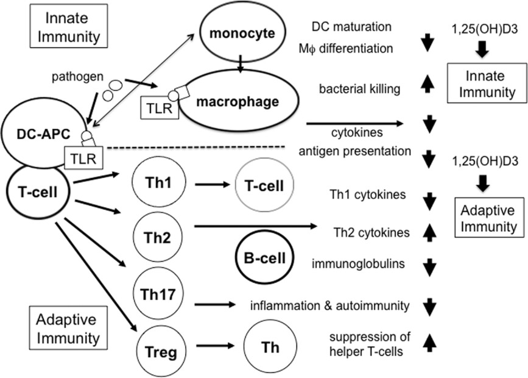
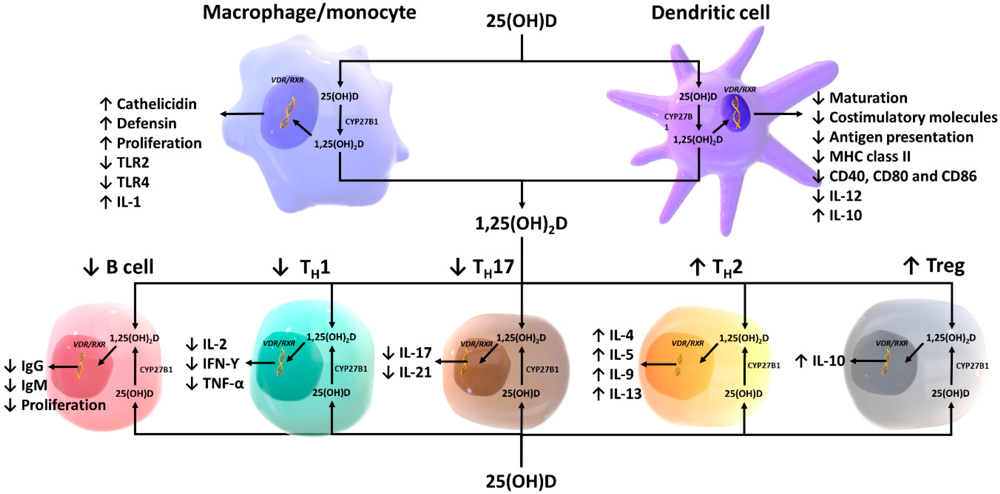
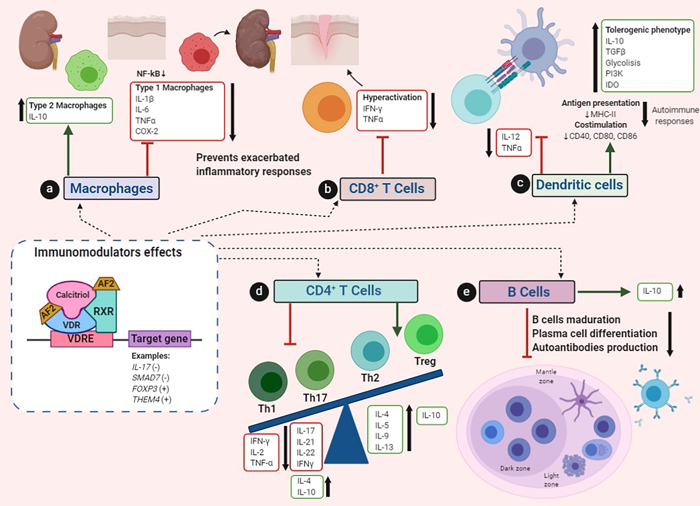
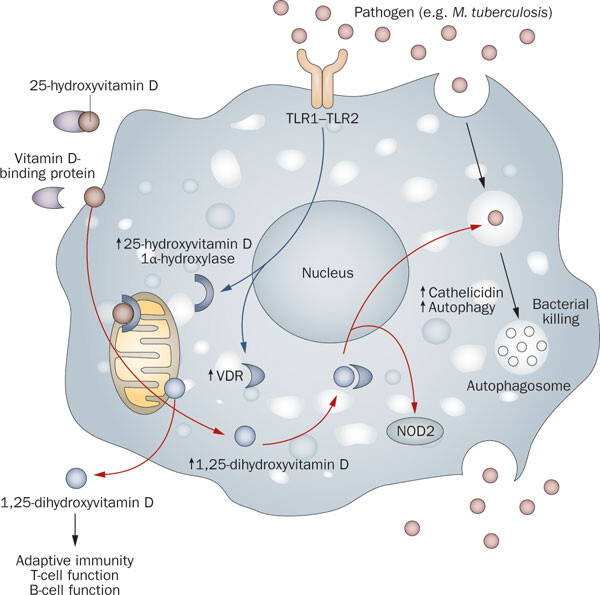
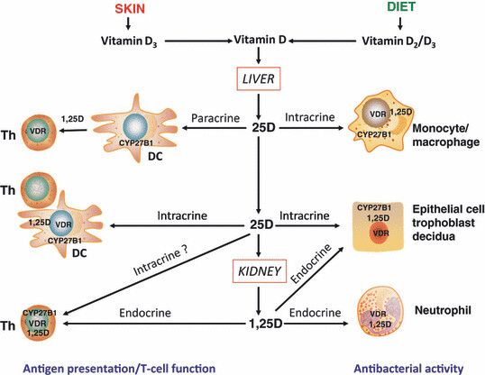

Vitamine D et système immunitaire
L’importance cruciale du rôle de la vitamine D sur le système immunitaire a récemment captivé l’attention des chercheurs depuis la découverte de la coexistence du et du dans des tissus dont la fonction n’est pas directement liée à l’homéostasie du calcium [@Zehnder.2001]. En particulier, l’expression du dans les cellules immunitaires est régulée indépendamment de l’homéostasie du calcium, en présence ou non de pathogènes, ce qui démontre le rôle central de la vitamine D dans la régulation du système immunitaire [@White.2022].
La vitamine D agit à la fois sur les cellules du système immunitaire inné et adaptatif par de nombreuses fonctions et effets (). Deux observations principales supportent la théorie du rôle de la vitamine D dans le système immunitaire : le récepteur au calcitriol est présent dans toutes les cellules immunitaires, et la présence de l’enzyme de conversion finale du calcidiol en calcitriol, la 1-α-hydroxylase est uprégulée par certaines cellules immunes [@Giannini.2022].
Ainsi, plusieurs cellules immunitaires peuvent synthétiser l’enzyme clé permettant la conversion du 25(OH)2D3 en 1,25(OH)2D3, le cytochrome CYP27B1 ou aussi appelée 1-α-hydroxylase. L’induction de cette enzyme concerne des cellules telles que les cellules dendritiques, monocytes, macrophages, lymphocytes B et T [@Giannini.2022 ; @Dankers.2017].
Dans ce contexte, l’enzyme 1-α-hydroxylase n’est pas uprégulée par la . Par conséquent, la production de 1,25(OH)2D3 dépend des niveaux de substrat de 25(OH)D3 et peut être régulée par des signaux inflammatoires, tels que le et les cytokines [@Giannini.2022].

Mécanismes d’action de la vitamine D sur le système immunitaire
La vitamine D possède une action globalement anti-inflammatoire et donc régulatrice de l’inflammation (). Elle agit à la fois sur le système immunitaire inné et adaptatif. A l’initiation de la réponse inflammatoire, le calcitriol est essentiel afin de répondre à une infection.
Fonctions et effets de la vitamine D sur les cellules immunitaires innées
Plusieurs signaux sont nécessaires à l’induction de la 1-α-hydroxylase, tels que la présence d’activateurs de macrophages et de monocytes comme le ou l’, ainsi que les récepteurs innés . Lorsque les cellules sont activées, elles expriment le qui va permettre de métaboliser le calcidiol en calcitriol [@Liu.2006; @Charoenngam.2020].
Le calcitriol peut ensuite agir de manière intracrine via un signalement VDR-RXR qui va induire la production de cathélicidine LL-37 et de β2-défensine Figure 2. La cathélicidine est un peptide antimicrobien luttant contre les bactéries et les fongi en déstabilisant leurs membranes [@Charoenngram.2020]. Le calcitriol est capable entre autre d’induire la reconnaissance des pathogènes par le biais du TLR et le switch phénotypique de macrophage M1 vers M2 par la régulation positive de l’. Le calcitriol inhibe également des cytokines majeures pro-inflammatoires, l’ et le [@Meza-Meza.2022; @Caprio.2017].
Le calcitriol joue également un rôle paracrine puisqu’il va agir sur les cellules immunitaires environnantes, notamment sur les cellules immunitaires adaptatives.
Il est intéressant de noter une conséquence involontaire de cette fonction paracrine est que les macrophages produisent une quantité excessive de 1,25(OH)2D qui pénètre dans la circulation et stimule de manière non régulée l’absorption intestinale du calcium et la mobilisation du calcium osseux, ce qui entraîne une hypercalciurie et une hypercalcémie [23,24]. Ce phénomène est plus susceptible de se produire lorsque les taux circulants de

Les mécanismes d’action de la vitamine D sur le système immunitaire sont étroitement liés à son rôle anti-inflammatoire et à sa capacité à réguler l’inflammation, tant dans le système immunitaire inné que dans le système immunitaire adaptatif (). Lors de l’initiation de la réponse inflammatoire, le calcitriol joue un rôle essentiel dans la réponse aux infections.
Fonctions et effets de la vitamine D sur les cellules immunitaires innées
Au sein du système immunitaire inné, plusieurs signaux sont nécessaires pour induire l’activité de l’enzyme 1-α-hydroxylase, tels que la présence d’activateurs de macrophages tels que le . De plus, les sont capables de réguler positivement l’expression du et des gènes codant pour la 1-α-hydroxylase, contribuant ainsi à une immunité médiée par la vitamine D [@Liu.2006].
La vitamine D agit sur les macrophages en induisant leur activation et leur différenciation, ce qui entraîne une augmentation de la production de peptides défensifs tels que la cathélicidine et la β2-défensine [@Caprio.2017]. Le calcitriol est également capable de favoriser la reconnaissance des pathogènes par le biais des récepteurs de type Toll et de promouvoir la transition phénotypique des macrophages de l’état M1 à l’état M2 en régulant positivement la production d’IL-10. De plus, le calcitriol inhibe les cytokines pro-inflammatoires majeures telles que l’IL-6 et le TNF-α [@Meza-Meza.2022; @Caprio.2017].
Une fois le calcidiol métabolisé en calcitriol, cette forme active va agir de manière intracrine et paracrine sur les cellules environnantes.
Cette forme active renforce les activités antimicrobiennes des macrophages et des monocytes, et stimule la production de cathélicidine LL-37, une molécule qui agit contre les micro-organismes et les virus envahissants en déstabilisant leurs membranes. De plus, des études ont montré que la vitamine D influence la fonction des lymphocytes T cytotoxiques (CTL), car de faibles taux de 25(OH)D sont associés à une activation immunitaire accrue. Une supplémentation en vitamine D3 peut entraîner une immunosuppression et une augmentation du rapport CD4/CD8, indiquant ainsi une amélioration de la fonction immunitaire. Les effets de la vitamine D sur les CTL sont probablement médiés à la fois par l’activation directe des récepteurs de la vitamine D et par l’altération de la signalisation des cytokines via les cellules T auxiliaires et les cellules présentatrices d’antigènes. Dans l’ensemble, la vitamine D joue un rôle crucial dans l’immunité innée, offrant des effets protecteurs potentiels contre les maladies auto-immunes [@Charoenngam.2020].
- Expliquer comment la vitamine D influence les cellules immunitaires innées telles que les macrophages, les cellules dendritiques et les cellules tueuses naturelles.
- Mettre en évidence les effets de la vitamine D sur l’activation, la différenciation et les réponses inflammatoires des cellules immunitaires innées.
B. Fonctions et effets de la vitamine D sur les cellules immunitaires adaptatives - Expliquer comment la vitamine D modifie les réponses des lymphocytes T et B, les principales cellules immunitaires adaptatives. - Souligner l’importance de la vitamine D dans la régulation de l’équilibre entre les réponses immunitaires pro-inflammatoires et anti-inflammatoires.
C. Implications de la vitamine D dans la réponse immunitaire antivirale - Discuter des mécanismes par lesquels la vitamine D peut influencer la réponse immunitaire antivirale, notamment en régulant la production d’interférons et en modulant la fonction des cellules immunitaires antivirales. - Mettre en évidence les études qui ont examiné le rôle de la vitamine D dans la lutte contre les infections virales, y compris le COVID-19.
_____________________
De plus, la vitamine D agit également sur le système immunitaire adaptatif avec des effets inhibiteurs. Elle est capable d’induire une tolérance immunitaire en favorisant l’adoption d’un phénotype immature (cellules dendritiques, macrophages, lymphocytes B), par une diminution de l’expression du ainsi que des marqueurs de co-stimulation, nécessaires à l’activation de la réponse immune, tels que le CD40, CD80 et CD86 [@Meza-Meza.2020; @Caprio.2017].
Elle est également capable d’induire le changement phénotypique de sous-population de lymphocytes T CD4+, favorisant le passage de la population T auxiliaire (Th) Th1 et Th17 vers la population Th2. La sous-population Th2 régule à son tour les populations Th1 et Th17 dans un équilibre, diminuant ainsi globalement l’activité cytotoxique médiée par les cellules, qui est exacerbée dans les maladies autoimmunes et infections par des pathogènes[@Holick.2011; @Meza-Meza.2020].
Il a aussi été montré que l’action de la vitamine D sur son récepteur VDR était nécessaire au fonctionnement des lymphocytes T régulateurs iNKT et CD8αα [@Cheroutre.2008]. Les lymphocytes T CD8αα possèdent un caractère régulateur contrairement au lymphocyte CD8αβ classique. Ainsi, ces lymphocytes T régulateurs contribuent à l’homéostasie du tractus intestinal [@Cantorna.2010]. A l’inverse, les lymphocytes FoxP3+ Treg sont fonctionnellement indépendant de l’expression de VDR pour effectuer leurs fonctions régulatrices [@Cantorna.2010].
La vitamine D est également capable d’agir non-classiquement par des actions non-génomique, à savoir des actions de type protéine-protéine, telle que l’inhibition de la kinase IKκβ, un régulateur de la voie canonique de NF-κB, une des cytokines pro-inflammatoire clé de la réaction immunitaire [@Hii.2016].
___________

Mécanisme d’action de la vitamine D
L’effet de la vitamine D a été observé lors d’une infection par Mycobacterium tuberculosis sur les monocytes, où lors d’une expérience in vitro, des monocytes traités avec du calcitriol, la forme active de la vitamine D, conduisent à une réduction de la croissance de M. tuberculosis [@Hewison.2011]. Ces observations concernent un pathogène bactérien, cependant il existe des parallèles importants entre les mécanismes de réponses antibactériens et antiviraux dans la réponse immunitaire innée [@White.2022].

Action paracrine et intracrine

Dose de vitamine D nécessaire à l’immunité
@Hewison.2007
Molecular Mechanisms Underlying Immunomodulation
@Dankers.2017
In addition to the studies where cholecalciferol has been supplemented, attention has also focused on understanding the immunomodulatory effects of 1,25(OH)2D3 on a cellular level. Based on the current knowledge, 1,25(OH)2D3 reduced the pathogenicity of DCs, macrophages, CD4+ T cells, CD8+ T cells, and B cells. Similar effects have been observed in γδ T cells, iNKT cells, and ILCs, but more research is necessary to confirm these data (see section 5). It should be noted that 1,25(OH)2D3 does not merely work as an anti-inflammatory agent. Instead, 1,25(OH)2D3 assists in maintaining the balance between a pro- and anti-inflammatory state and is thereby able to restore the disturbed balance that is associated with autoimmunity. This balancing effect of 1,25(OH)2D3 is best illustrated in monocytes and macrophages, where it has pro-inflammatory effects in the early stages of activation but later shifts to an antiinflammatory state (242). Therefore, it is interesting to study the effects of 1,25(OH)2D3 in more detail in the various stages of differentiation and activation from monocyte to macrophage. The Carlberg lab has performed ChIP-seq experiments in the monocytic THP-1 cell line at early time points (5). Detailed studies have revealed several primary target genes such as ASAP2 and THBD (243–245), but also identified Bcl6 as a primary target that mediates important secondary responses (246). Next to the primary target genes, combining the ChIP-seq dataset with publically available ChIA-PET and FAIRE-seq datasets has improved the knowledge on VDR binding kinetics (247, 248).